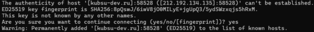
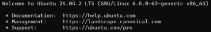
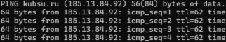
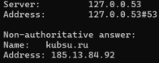
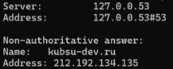
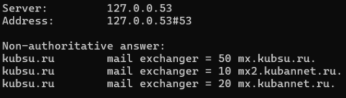
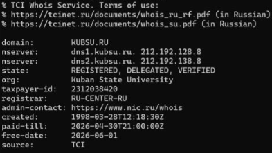
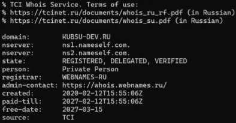
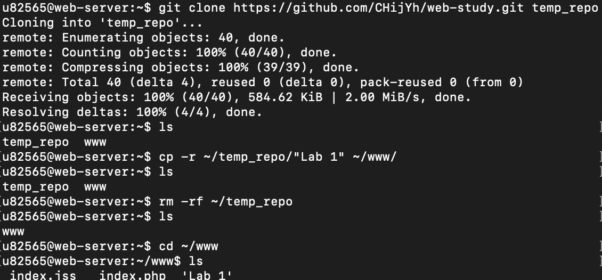
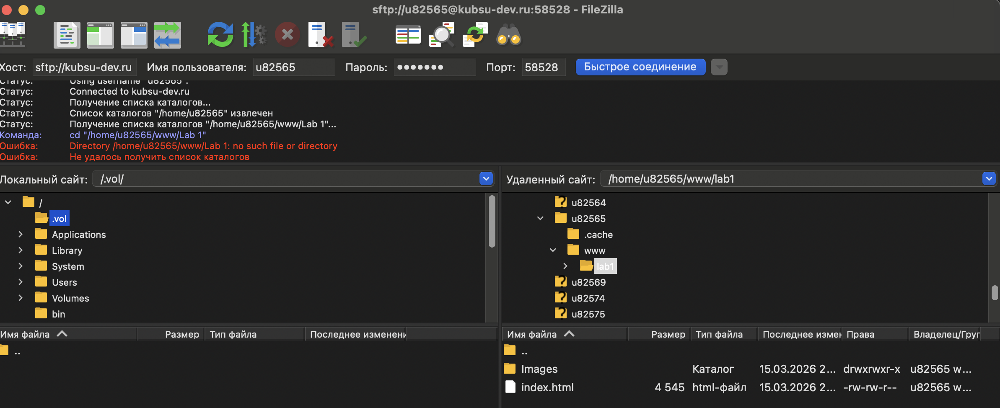

Для управления удаленным сервером было выполнено подключение с использованием протокола SSH.

Рис 1. Результат выполнения команды SSH username@kubsu-dev.ru -p 58528.

Рис 2. Результат после введения пароля от username.
С помощью утилиты ping был определен IP-адрес веб-сервера kubsu.ru.

Рис 3. Результат выполнения команды ping
Для получения A-записей и MX-записей домена kubsu.ru и kubsu-dev.ru использовалась утилита nslookup.

Рис 4. Результат после введения команды nslookup kubsu.ru

Рис 5. Результат после введения команды nslookup kubsu-dev.ru

Рис 6. Результат после введения команды nslookup -type=mx kubsu.ru
С помощью команды whois была получена информация о дате регистрации домена kubsu.ru и kubsu-dev.ru,.

Рис 7. Результат после введения команды nslookup kubsu.ru

Рис 8. Результат после введения команды nslookup kubsu-dev.ru

Рис 9. Клонирование репозитария со скриншотами и страницей в каталог www

Рис 10. Копирование на локальный компьютер файлы задания из каталога www. с Filezilla